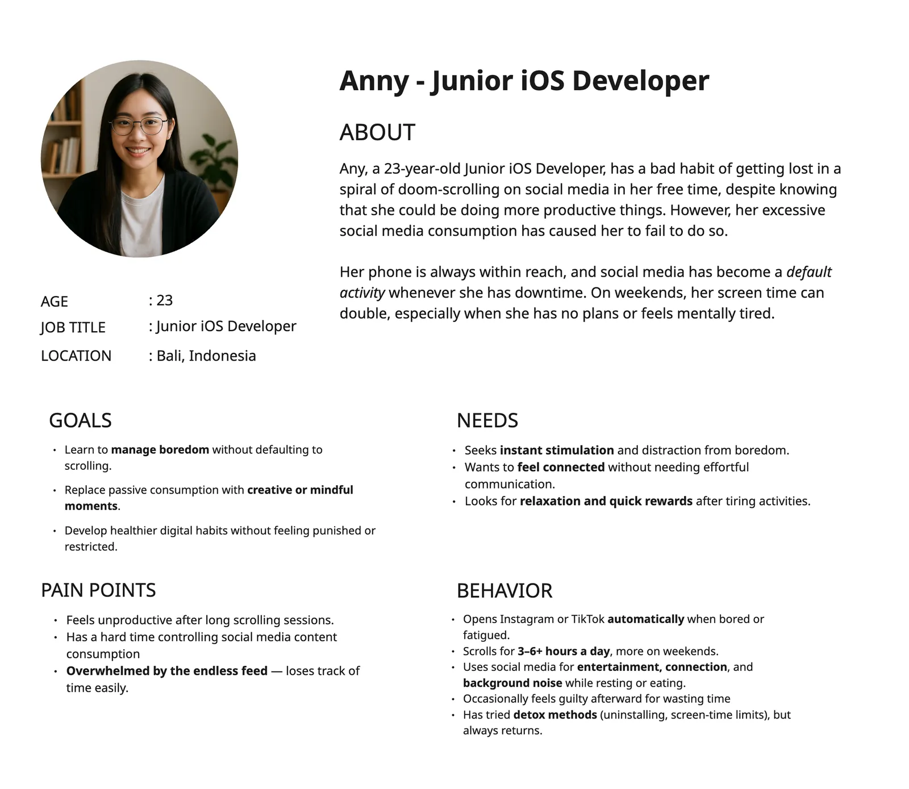
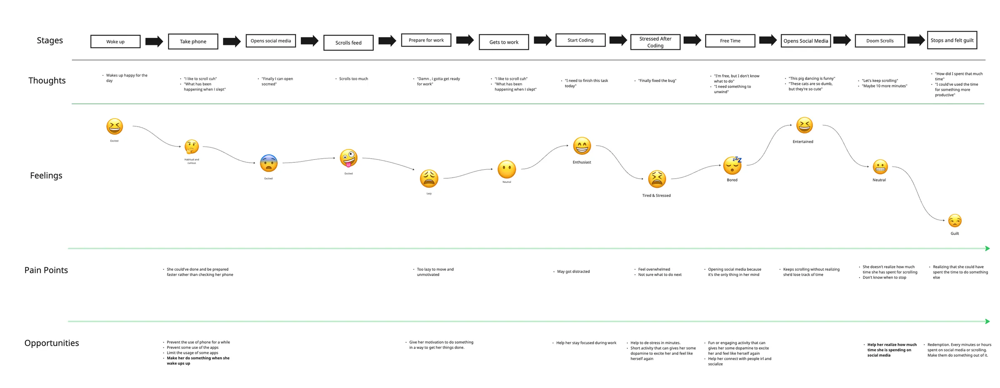
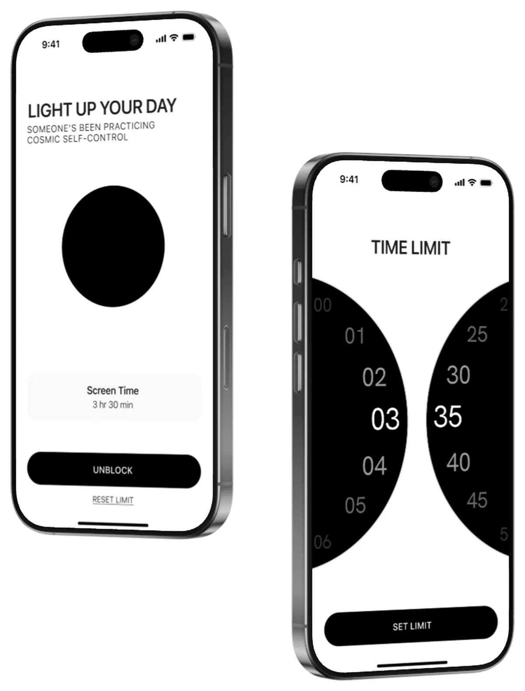
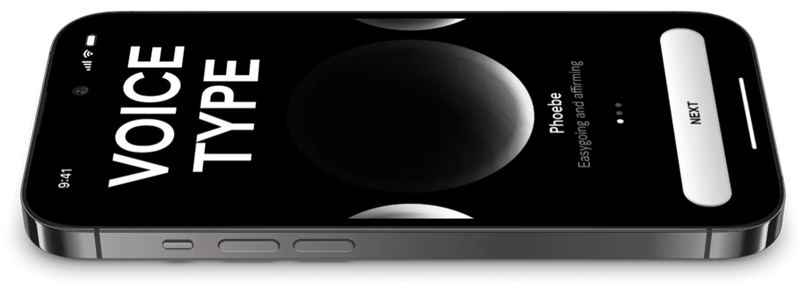
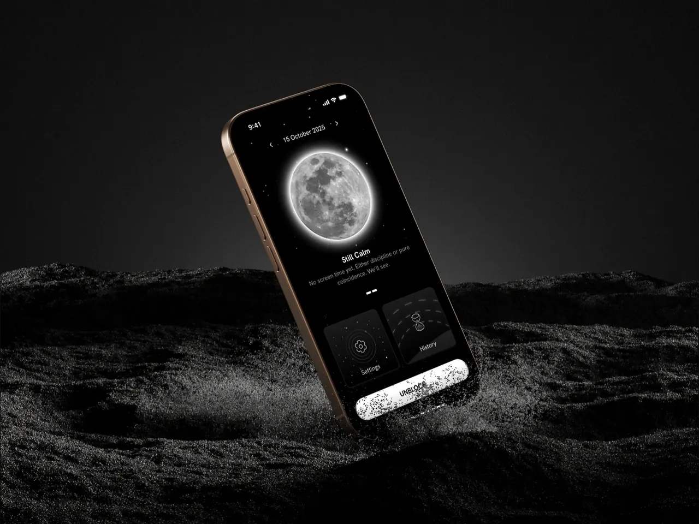
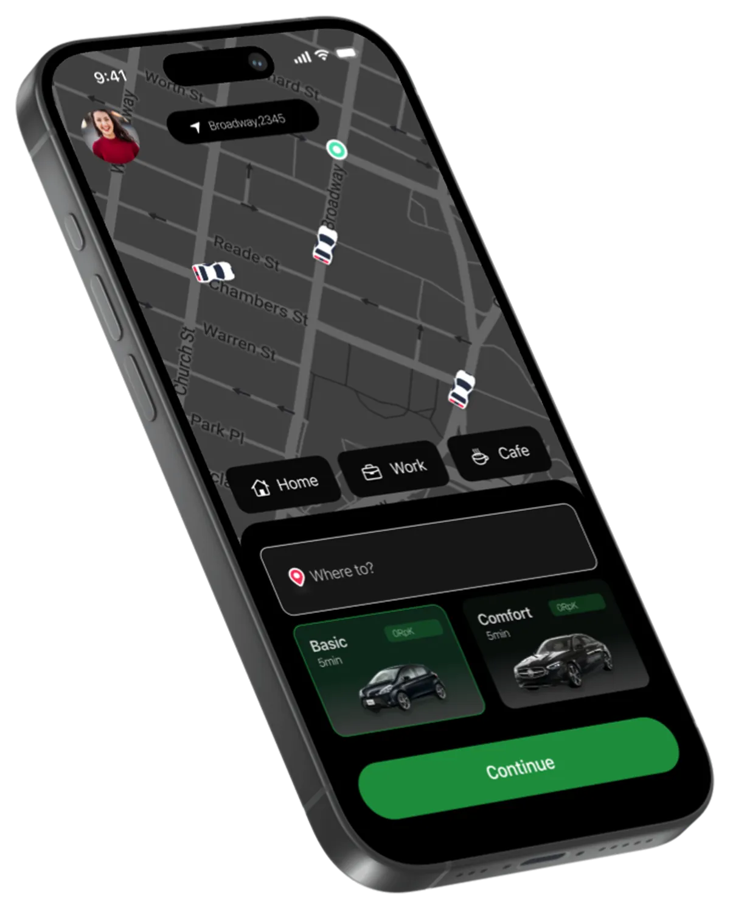

Luna

Screen time is hard to manage. Luna helps you manage it and become more mindful of your time, by giving you choice rather than fully restricting.
Screen time is hard to manage. Luna helps you manage your screen time and make you more mindful of your time.
— Ryan H
The problem
Problem statement
Social media is a time-consuming activity that can be hard to manage. It can be hard to stay focused on your work and goals when you are constantly scrolling through your feed.
A problem that my team and I had in common was that we were all addicted to our phones and we were all spending too much time on social media.
What we learned
Background research
We conducted research on the problem of social media addiction and how it affects people's lives. We found that many people are addicted to their phones and are spending too much time on social media. We also found that many people are not aware of the impact of social media on their lives and how it can affect their mental health.
Then we realized that there was a need for a solution that would help people manage their time and stay focused on their work and goals.
User interviews
We conducted in-depth interviews with potential users to understand their screen time habits, pain points, and motivations. Through structured conversations, we gained valuable insights about their daily routines, struggles with phone addiction, and what would motivate them to change their behavior.
The interviews revealed common themes around the need for awareness of time, flexibility, and positive reinforcement rather than strict limitations.
Competitor analysis
My team and I looked for apps that solve these problems, like Freedom, ScreenZen and Opal. All these apps focused on restricting, mostly without a sense of control. Most people deleted the apps because they felt limited.
We figured we needed to make something that gives people choice rather than restricting them completely. That would make our app different. The perfect sweet spot.
Who it is for
User persona
We created a user persona based on the interviews: a young adult who is addicted to their phone and spends too much time on social media, unaware of its impact on their life and mental health, and looking for a way to manage their time and stay focused on their goals.

User journey
We mapped the persona's journey and found that when they are using their phone, they aren't aware of the time they spend on it. That was the problem we needed to solve.

Sketch, then wireframe
Crazy 8sIdeate & brainstorm
I used the Crazy 8 technique to rapidly sketch user flows and features. The process identified solutions prioritising ease of use, clear navigation, and three key features:
- Timer: a limit they set for control.
- Unblocking: rules they set for unblocking.
- Voice Type: a reminder to stay focused, so it feels like a choice and a pause to think “Am I really doing this?”
Lo-fi wireframes
Low-fidelity wireframes were created from the Crazy 8 session to quickly test user flows and assess usability. These simple sketches helped visualise the user journey and identify potential pain points early, a flexible foundation for rapid iteration before moving to high fidelity.

Usability testing
User testing
I conducted usability testing sessions with participants using the low-fidelity wireframes. Users completed key tasks while I observed their interactions and collected feedback.
The testing revealed navigation issues, unclear information architecture, and confusion around certain features. Based on these findings, I iterated on the wireframes to improve clarity, simplify flows, and enhance the overall experience before moving to high-fidelity designs.
Built in Swift
High-fidelity prototype
After testing and receiving approval, I enhanced the visual design following Apple's Human Interface Guidelines. Building the iOS app in Swift and Xcode was my first experience with these tools. Despite the learning curve, I successfully translated the designs into a high-fidelity prototype, bringing the concept to life.


Luna became more than just a functional tool. It turned into an experience that was engaging, friendly, and genuinely useful.
Reflecting on this project, it truly felt like embarking on a creative journey. I started with a simple question: how can we help people become more mindful of their screen time? Along the way, I experimented with techniques like Crazy 8s, letting my ideas flow freely on paper as I imagined how users might interact with Luna. Through user interviews, I began to understand real stories: the struggles, motivations, and daily routines that shaped people's habits.
Diving into competitor analysis felt like mapping out the landscape and learning what others had built, and what gaps still needed to be filled. Building out personas and mapping user journeys brought the project to life for me. Usability testing then showed where things clicked and where changes were needed to make the app welcoming and intuitive.
This journey reminded me that thoughtful design, continuous iteration, and empathy are at the heart of creating products that truly make a difference.
